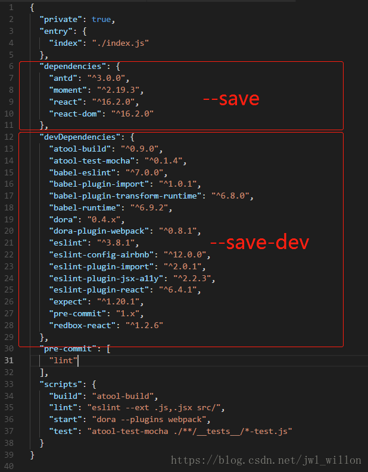
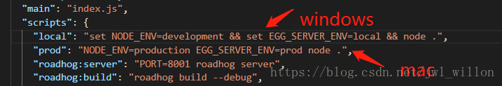

webpack笔记
webpack打包
Webpack 可以做什么事情？
- webpack 能够处理 JS 文件的互相依赖关系；
- webpack 能够处理JS的兼容问题，把 高级的、浏览器不是别的语法，转为 低级的，浏览器能正常识别的语法
打包遇到的坑
- 打包方法：
webpack 要打包的文件的路径 打包好的输出文件的路径
坑1
- 已全局安装webpack：
npm i webpack -g
执行webpack .\src\main.js -o .\dist\bundle.js,加-o是4以上版本的语法
报错
webpack : 无法加载文件 C:\Users\Kaious\AppData\Roaming\npm\webpack.ps1，因为在此系统上禁止运行脚本。有关详细信息，请参阅 https:/go.micr
osoft.com/fwlink/?LinkID=135170 中的 about_Execution_Policies。解决方法
参考：解决方法
- 使用管理员身份打开PowerShell
- 键入Set-ExecutionPolicy RemoteSigned命令
- 键入Y
- 最后可以使用Get-ExecutionPolicy来看看是否修改成功
坑2
- 再次执行
webpack .\src\main.js -o .\dist\bundle.js
报错
webpack not installed
Install webpack to start bundling:
$ npm install --save-dev webpack按照指示npm install --save-dev webpack还是不行
解决方法
- 需要全局安装webpack-cli：
npm install webpack-cli -g
坑3
- 再次执行
webpack .\src\main.js -o .\dist\bundle.js
警告
WARNING in configuration
The 'mode' option has not been set, webpack will fallback to 'production' for this value. Set 'mode' option to 'development' or 'production' to enable defaults for each environment.
You can also set it to 'none' to disable any default behavior. Learn more: https://webpack.js.org/configuration/mode/解决方法
- 执行
webpack .\src\main.js -o .\dist\bundle.js --mode=development
大功告成！
Hash: 66bd1d851b4e3101e4b1
Version: webpack 4.42.1
Time: 252ms
Built at: 2020-04-09 0:05:01
Asset Size Chunks Chunk Names
bundle.js 316 KiB main [emitted] main
Entrypoint main = bundle.js
[./src/main.js] 1.53 KiB {main} [built]
+ 1 hidden module使用webpack的配置文件简化打包时候的命令
在项目根目录中创建
webpack.config.js由于运行webpack命令的时候，webpack需要指定入口文件和输出文件的路径，所以，我们需要在
webpack.config.js中配置这两个路径：// 导入处理路径的模块 var path = require('path'); // 导出一个配置对象，将来webpack在启动的时候，会默认来查找webpack.config.js，并读取这个文件中导出的配置对象，来进行打包处理 module.exports = { entry: path.resolve(__dirname, 'src/js/main.js'), // 项目入口文件 output: { // 配置输出选项 path: path.resolve(__dirname, 'dist'), // 配置输出的路径 filename: 'bundle.js' // 配置输出的文件名 } }
当我们在 控制台，直接输入 webpack命令执行的时候，webpack 做了以下几步：
- 首先，
webpack发现，我们并没有通过命令的形式，给它指定入口和出口 webpack就会去 项目的 根目录中，查找一个叫做webpack.config.js的配置文件- 当找到配置文件后，
webpack会去解析执行这个 配置文件，当解析执行完配置文件后，就得到了 配置文件中，导出的配置对象module - 当
webpack拿到 配置对象module后，就拿到了 配置对象中，指定的 入口 和 出口，然后进行打包构建；
实现webpack的实时打包构建
由于每次重新修改代码之后，都需要手动运行webpack打包的命令，比较麻烦。所以使用webpack-dev-server来实现代码实时打包编译，当修改代码之后，会自动进行打包构建
- 项目根目录下运行
cnpm i webpack-dev-server --save-dev安装到开发依赖 - 安装完成之后，在命令行直接运行
webpack-dev-server来进行打包，发现报错，
在项目中本地安装的webpack-dev-server，无法把它当作脚本命令在powershell终端直接运行（只有全局-g的工具才能在终端正常执行）
此时需要借助于package.json文件中的指令，来进行运行webpack-dev-server命令，在scripts节点下新增"dev": "webpack-dev-server"指令，发现可以进行实时打包，
运行$npm run dev
输出信息：
webpack-dev-server
Project is running at http://localhost:8080/
webpack output is served from /
Hash: a399444d432f5f8fa762
Version: webpack 3.12.0
Time: 493ms
Asset Size Chunks Chunk Names
bundle.js 613 kB 0 [emitted] [big] main
[2] multi ./node_modules/_webpack-dev-server@2.11.5@webpack-dev-server/client?http://localhost:8080 ./src/main.js 40 bytes {0} [built]
[3] ./node_modules/_webpack-dev-server@2.11.5@webpack-dev-server/client?http://localhost:8080 7.93 kB {0} [built]
[4] ./node_modules/url/url.js 23.3 kB {0} [built]
[5] ./node_modules/node-libs-browser/node_modules/punycode/punycode.js 14.7 kB {0} [built]
[7] ./node_modules/url/util.js 314 bytes {0} [built]
[8] ./node_modules/querystring-es3/index.js 127 bytes {0} [built]
[11] ./node_modules/_strip-ansi@3.0.1@strip-ansi/index.js 161 bytes {0} [built]
[12] ./node_modules/_ansi-regex@2.1.1@ansi-regex/index.js 135 bytes {0} [built]
[13] ./node_modules/_loglevel@1.6.7@loglevel/lib/loglevel.js 8.61 kB {0} [built]
[14] ./node_modules/_webpack-dev-server@2.11.5@webpack-dev-server/client/socket.js 1.08 kB {0} [built]
[16] ./node_modules/_webpack-dev-server@2.11.5@webpack-dev-server/client/overlay.js 3.67 kB {0} [built]
[21] (webpack)/hot nonrecursive ^\.\/log$ 170 bytes {0} [built]
[23] (webpack)/hot/emitter.js 77 bytes {0} [built]
[25] ./src/main.js 1.57 kB {0} [built]
[26] ./node_modules/jquery/dist/jquery.js 280 kB {0} [built]
+ 12 hidden modules
webpack: Compiled successfully.bundle.js放在内存中
但是dist目录下并没有生成bundle.js文件，这是因为webpack-dev-server将打包好的文件放在了内存中,以一种虚拟的形式托管到根目录（看不到），和src，dist平级
- 把
bundle.js放在内存中的好处是：由于需要实时打包编译，所以放在内存中速度会非常快 - 这个时候访问webpack-dev-server启动的
http://localhost:8080/网站，发现是一个文件夹的面板，需要点击到src目录下，才能打开我们的index首页，此时引用不到bundle.js文件，需要修改index.html中script的src属性为:<script src="../bundle.js"></script> - 为了能在访问
http://localhost:8080/的时候直接访问到index首页，可以使用--contentBase src指令来修改dev指令，指定启动的根目录：
在package.json文件配置启动页面
package.json文件中，在scripts节点下"dev"改为
"dev": "webpack-dev-server --open --port 3000 --contentBase src --hot"
--open自动打开浏览器--port 3000端口号为3000--contentBase src自动显示scr目录下内容--hot可以实现异步刷新，例如改变css元素不会刷新页面
同时修改index页面中script的src属性为<script src="bundle.js"></script>
使用html-webpack-plugin插件配置启动页面
由于使用--contentBase指令的过程比较繁琐，需要指定启动的目录，同时还需要修改index.html中script标签的src属性，所以推荐大家使用html-webpack-plugin插件配置启动页面.
运行
cnpm i html-webpack-plugin --save-dev安装到开发依赖修改
webpack.config.js配置文件如下：// 导入处理路径的模块 var path = require('path'); // 导入自动生成HTMl文件的插件 var htmlWebpackPlugin = require('html-webpack-plugin'); module.exports = { entry: path.resolve(__dirname, 'src/js/main.js'), // 项目入口文件 output: { // 配置输出选项 path: path.resolve(__dirname, 'dist'), // 配置输出的路径 filename: 'bundle.js' // 配置输出的文件名 }, plugins:[ // 添加plugins节点配置插件 new htmlWebpackPlugin({ template:path.resolve(__dirname, 'src/index.html'),//模板路径 filename:'index.html'//自动生成的HTML文件的名称 }) ] }
htmlWebpackPlugin插件的两个作用：
- 自动在
内存中根据指定页面生成一个内存的页面 - 自动把打包好的
bundle.js追加到页面中去,当使用html-webpack-plugin之后，我们不再需要手动处理bundle.js的引用路径了，因为这个插件，已经帮我们自动创建了一个合适的script, 并且引用了正确的路径
配置启动页面步骤（启动hot更新）
- 修改
webpack.config.js文件，module中新增devServer节点如下：devServer:{ // --open --port 3000 --contentBase src --hot open: true, // 自动打开浏览器 port: 3000, // 设置启动时候的运行端口 contentBase: 'src', // 指定托管的根目录 hot: true // 启用热更新 的 第1步 } - 在头部引入
webpack模块：var webpack = require('webpack'); - 在
plugins节点下新增：new webpack.HotModuleReplacementPlugin()
webpack处理第三方文件类型
- 发现要处理的文件不是
js文件，去配置文件中查找有没有对应的第三方loader规则 - 如果找到对应规则，调用对应
loader处理文件 loader模块的调用顺序是从后向前调用的- 最后一个
loader调用完毕，把处理的结果直接交给webpack打包合并，最终输出到bundle.js
使用webpack打包css文件
- 运行
cnpm i style-loader css-loader --save-dev - 修改
webpack.config.js这个配置文件：- 在
module.exports = {}里新增一个 配置节点，叫做module, 它是一个对象 - 在这个
module对象身上，有个rules属性，是个数组； - 这个数组中，存放了所有第三方文件的匹配和处理规则；
module: { // 用来配置第三方loader模块的 rules: [ // 文件的匹配规则 { test: /\.css$/, use: ['style-loader', 'css-loader'] }//处理css文件的规则 ] }
- 在
- 注意：
use表示使用哪些模块来处理test所匹配到的文件；use中相关loader模块的调用顺序是从后向前调用的；
使用webpack打包less文件
- 运行
cnpm i less-loader less -D - 修改
webpack.config.js这个配置文件：{ test: /\.less$/, use: ['style-loader', 'css-loader', 'less-loader'] },
使用webpack打包sass文件
- 运行
cnpm i sass-loader node-sass --save-dev - 在
webpack.config.js中添加处理sass文件的loader模块：{ test: /\.scss$/, use: ['style-loader', 'css-loader', 'sass-loader'] }
使用webpack处理css中的路径
- 运行
cnpm i url-loader file-loader --save-dev - 在
webpack.config.js中添加处理url路径的loader模块：{ test: /\.(png|jpg|gif)$/, use: 'url-loader' } - 可以通过
limit指定进行base64编码的图片大小；只有小于指定字节（byte）的图片才会进行base64编码：{ test: /\.(png|jpg|gif)$/, use: 'url-loader?limit=43960' },
TIPS
- webpack里面带
s的都是数组，例如plugins import *** from ***是ES6中导入模块的方式import './css/index.css'一般js才会import *** from ***，css直接import
npm常用指令
npm install<=>npm i--save<=>-S--save-dev<=>-Dnpm run start<=>npm start// 对应”scripts”里的”start”命令npm i <packname>- 安装模块到项目
node_modules目录下 - 不会修改
package.json文件 - 运行
npm install初始化项目时不会下载模块
- 安装模块到项目
npm i --save-dev <packname>- 安装模块到项目
node_modules目录下 - 并在
package文件的devDependencies属性写入依赖 - 运行
npm install初始化项目时，会将模块下载到项目目录下 - 运行
npm install --production或者注明NODE_ENV变量值为production时，不会自动下载模块到node_modules目录中 - 工程构建（开发时、“打包”时）依赖 ；例：xxx-cli , less-loader , babel-loader…
- 安装模块到项目
npm i --save <packname>- 安装模块到项目
node_modules目录下 - 并在
package文件的dependencies属性写入依赖 - 运行
npm install初始化项目时，会将模块下载到项目目录下 - 运行
npm install --production或者注明NODE_ENV变量值为production时，会自动下载模块到node_modules目录中 - 项目（运行时、发布到生产环境时）依赖；例：antd , element,react…
- 安装模块到项目
npm i <packname> -g- -g 将模块安装到全局，具体安装到磁盘哪个位置，要看npm config prefix的位置。
查看：npm config ls
修改：npm config set prefix - 不会在项目node_modules目录中保存模块包
- 不会修改package.json文件
- 运行 npm install 初始化项目时不会下载模块
- -g 将模块安装到全局，具体安装到磁盘哪个位置，要看npm config prefix的位置。
对应关系

script`命令中设置`NODE_ENV`" title="NODE_ENV">
使用原则:运行时需要用到的包使用--save，否则使用--save-dev。
- 在新建
package.json文件时，我们可以使用npm init -y快速创建（yes 表示一路默认创建，还有 -f 表示 force）